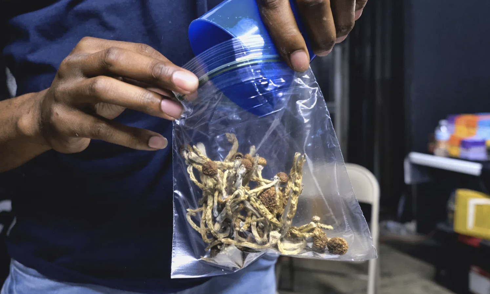
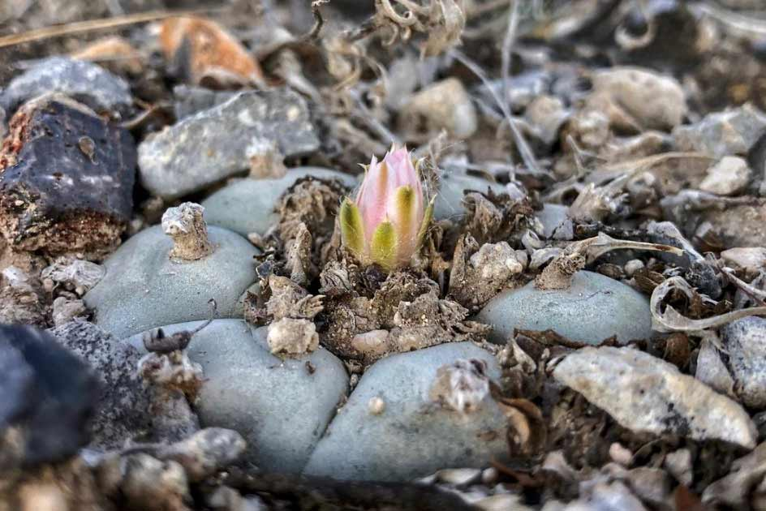

 California Inches Toward Decriminalizing Psychedelics California senators pointed to the “failed” War on Drugs and new scientific evidence regarding the benefits of certain hallucinogens. Read More
Peyote and Religious Freedom: How Legal Discourse, Race, and Identity Shape Religion for American Indians This paper seeks to analyze how courts have interpreted religious freedom regarding American Indian religion. Specifically, this project investigates the Native American Church (NAC) and their legal battle for a federal exemption to use the substance peyote in religious ceremonies. Read More
 Conservation efforts for Peyote Recommended technique for sustainable harvest of the peyote button. Read More
The Shaman’s Treasure: The Many Plants Added to the Ayahuasca Brew It is a known fact that ayahuasca and yagé drinks consist of a pair of plants: vine or leaves of ayahuasca (Banisteriopsis... Read More